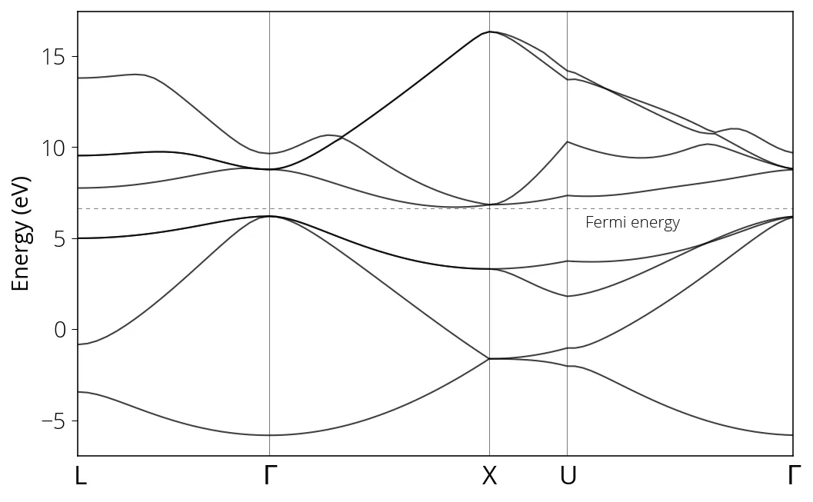

Estrutura de bandas
Before we can run bands calculation, we need to perform single-point self
consistent field calculation. We have our input scf file with some new
parameters:
&CONTROL
calculation = 'scf',
restart_mode = 'from_scratch',
prefix = 'silicon',
outdir = './tmp/'
pseudo_dir = '../pseudos/'
verbosity = 'high'
/
&SYSTEM
ibrav = 2,
celldm(1) = 10.2076,
nat = 2,
ntyp = 1,
ecutwfc = 50,
ecutrho = 400,
nbnd = 8,
! occupations = 'smearing',
! smearing = 'gaussian',
! degauss = 0.005
/
&ELECTRONS
conv_thr = 1e-8,
mixing_beta = 0.6
/
ATOMIC_SPECIES
Si 28.086 Si.pz-vbc.UPF
ATOMIC_POSITIONS (alat)
Si 0.0 0.0 0.0
Si 0.25 0.25 0.25
K_POINTS (automatic)
8 8 8 0 0 0Run the scf calculation:
pw.x < pw.scf.silicon_bands.in > pw.scf.silicon_bands.outNext step is our band calculation (non-self consistent field) calculation. The
bands calculation is non self-consistent and reads/uses the ground state
electron density, Hartree, exchange and correlation potentials obtained in the
previous step (scf calculation). In case of non self-consistent calculation, the
pw.x program determines the Kohn-Sham eigenfunction and eigenvalues without
updating Kohn-Sham Hamiltonian at every iteration. We need to specify the
k-points for which we want to calculate the eigenvalues. You may use the
See-K-path tool by materials cloud to visualize the K-path. We
can specify nbnd, by default it calculates half the number of valence
electrons, i.e., only the occupied ground state bands. Usually we are interested
also in the unoccupied bands above the Fermi energy. Number of occupied bands
can be found in the scf output as number of Kohn-Sham states. Below is a
sample input file for the band calculation:
&control
calculation = 'bands',
restart_mode = 'from_scratch',
prefix = 'silicon',
outdir = './tmp/'
pseudo_dir = '../pseudos/'
verbosity = 'high'
/
&system
ibrav = 2,
celldm(1) = 10.2076,
nat = 2,
ntyp = 1,
ecutwfc = 50,
ecutrho = 400,
nbnd = 8
/
&electrons
conv_thr = 1e-8,
mixing_beta = 0.6
/
ATOMIC_SPECIES
Si 28.086 Si.pz-vbc.UPF
ATOMIC_POSITIONS (alat)
Si 0.00 0.00 0.00
Si 0.25 0.25 0.25
K_POINTS {crystal_b}
5
0.0000 0.5000 0.0000 20 !L
0.0000 0.0000 0.0000 30 !G
-0.500 0.0000 -0.500 10 !X
-0.375 0.2500 -0.375 30 !U
0.0000 0.0000 0.0000 20 !GRun pw.x with bands calculation input file:
pw.x < pw.bands.silicon.in > pw.bands.silicon.outAfter the bands calculation is performed, we need some postprocessing using
bands.x utility in order to obtain the data in more usable format. Input file
for bands.x postprocessing:
&BANDS
prefix = 'silicon'
outdir = './tmp/'
filband = 'si_bands.dat'
/Run bands.x from post processing (PP) module:
bands.x < pp.bands.silicon.in > pp.bands.silicon.outFinally, we run plotband.x to visualize bandstructure. We can either run it
interactively (as described below) or provide an input file. In order to run
interactively, type plotband.x in your terminal.
Input file > si_bands.dat
Reading 8 bands at 91 k-points
Range: -5.8300 16.3420eV Emin, Emax > -6, 16
high-symmetry point: 0.5000 0.5000 0.5000 x coordinate 0.0000
high-symmetry point: 0.0000 0.0000 0.0000 x coordinate 0.8660
high-symmetry point: 1.0000 0.0000 0.0000 x coordinate 1.8660
high-symmetry point: 1.0000 0.2500 0.2500 x coordinate 2.2196
high-symmetry point: 0.0000 0.0000 0.0000 x coordinate 3.2802
output file (gnuplot/xmgr) > si_bands.gnuplot
bands in gnuplot/xmgr format written to file si_bands.gnuplot
output file (ps) > si_bands.ps
Efermi > 6.6416
deltaE, reference E (for tics) 4, 0
bands in PostScript format written to file si_bands.psYou will have si_bands.ps with band diagram. Alternatively, you can use your
favorite plotting program to make the plots. Below is an example of using Python
matplotlib.
import matplotlib.pyplot as plt
from matplotlib import rcParamsDefault
import numpy as np
%matplotlib inline
plt.rcParams["figure.dpi"]=150
plt.rcParams["figure.facecolor"]="white"
plt.rcParams["figure.figsize"]=(8, 6)
# load data
data = np.loadtxt('../src/silicon/si_bands.dat.gnu')
k = np.unique(data[:, 0])
bands = np.reshape(data[:, 1], (-1, len(k)))
for band in range(len(bands)):
plt.plot(k, bands[band, :], linewidth=1, alpha=0.5, color='k')
plt.xlim(min(k), max(k))
# Fermi energy
plt.axhline(6.6416, linestyle=(0, (5, 5)), linewidth=0.75, color='k', alpha=0.5)
# High symmetry k-points (check bands_pp.out)
plt.axvline(0.8660, linewidth=0.75, color='k', alpha=0.5)
plt.axvline(1.8660, linewidth=0.75, color='k', alpha=0.5)
plt.axvline(2.2196, linewidth=0.75, color='k', alpha=0.5)
# text labels
plt.xticks(ticks= [0, 0.8660, 1.8660, 2.2196, 3.2802], \
labels=['L', '$\Gamma$', 'X', 'U', '$\Gamma$'])
plt.ylabel("Energy (eV)")
plt.text(2.3, 5.6, 'Fermi energy', fontsize= small)
plt.show()
The k values corresponding to high symmetry points (such as \(\Gamma\), X, U, L)
which we need to label in our band diagram, can be found in the post-processing
output file (si_bands_pp.out).
Bandgap value can be determined from the highest occupied, lowest unoccupied
level values printed in scf calculation output.
Note on bandgap
Usually, band gaps computed using common exchange-correction functionals such as LDA or GGA are severely underestimated compared to actual experimental values. This discrepancy is mainly due to (1) approximations used in the exchange correction functional and (2) a derivative discontinuity term, originating from the density functional being discontinuous with the total number of electrons in the system. The second contribution is larger contributor to the error. It can be partly addressed by a variety of techniques such as the GW approximation.
Strategies to improve band gap prediction at moderate to low computational cost now been developed by several groups, including Chan and Ceder (delta-sol)1, Heyd et al. (hybrid functionals)2, and Setyawan et al. (empirical fits)3.
Resources
- https://docs.materialsproject.org/methodology/materials-methodology/electronic-structure#accuracy-of-band-structures
- See K-pat online tool
Footnotes
-
M. Chan, G. Ceder, Efficient Band Gap Predictions for Solids, Physical Review Letters 19 (2010) https://doi.org/10.1103/PhysRevLett.105.196403 ↩
-
J. Heyd, J.E. Peralta, G.E. Scuseria, R.L. Martin, Energy band gaps and lattice parameters evaluated with the Heyd-Scuseria-Ernzerhof screened hybrid functional, Journal of Chemical Physics 123 (2005) https://doi.org/10.1063/1.2085170 ↩
-
W. Setyawan, R.M. Gaume, S. Lam, R. Feigelson, S. Curtarolo, High-throughput combinatorial database of electronic band structures for inorganic scintillator materials., ACS Combinatorial Science. (2011) https://doi.org/10.1021/co200012w. ↩
Conteúdo adaptado de Bandstructure Calculation, do Quantum Espresso Tutorial de Pranab Das, sob licença CC BY 4.0. Alterações: layout, título e navegação traduzidos para o português.